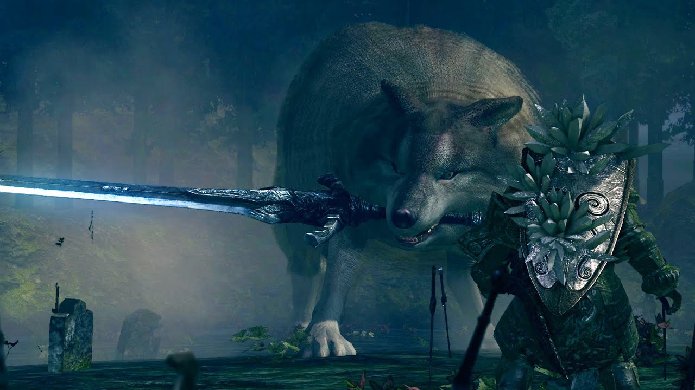

Lore
Not much can be said about Sif that doesn't coincide with Artorias. As a wolf, trained to kill his enemies, Artorias adopted Sif into his quest to fight the Abyss. The two of them together would face the catastrophy of New Londo and come out unscathe. Sif also joined in Artorias' mission to Oolacile. Once they both made it deep into the Chasm that Manus had created, Sif had wounded his hind leg and was unable to continue on. Artorias, with a broken left arm, decided to wield his sword in his right hand, and leave his companion with his shield, to protect Sif from any dangers he may encounter while waiting for Artorias to return.
After the events of Oolacile, Sif would vow to protect the grave of his best friend Artorias, as buried with him was his sacred art of Abyss Walking. This drew many thieves and "Heroes" towards the grave in which Sif would defend. Eventually, Sif would meet his match against the player, as in order to progress through the game, the player needs the Covenant of Artorias which allows the user to walk in the darkness of the abyss.
The Great Grey Wolf, Sif

Location:
Darkroot Gardens
Strategies
Moveset and Mechanics
Sif has a very limited moveset, which consists of some short range attacks and one closing distance attack. If the player is far enough away from Sif, he will leap into the air, landing on the player before dodging back. This can be easily i-framed if the player times their dodge correctly.
Sif has focused close range set of attacks. He will do a ground slam, which can is telegraphed when he lifts his front two legs into the air. A large sweeping attack when he tilts his head back, and an AOE sweep in which he will spin twice around him. Sifs attacks have very forgiving dodge times. It is not advised to use or block with a shield unless neccesary, as most of his attacks drain a lot of the players stamina.
Sticking close to one of Sifs hind legs is ideal, as most of his attacks will miss the player when stood under him. If the player does enough damage to one of Sifs legs, he will start limping, and his attacks will become incredibly slowed.
Weaknesses:
Resistances:
Drops
- Soul of Sif
- Covenant of Artorias
- 1 Homeward Bone
- 1 Humanity
- 40,000 Souls (NG)
- 120,000 Souls (NG+)
Trivia
- In Norse mythology, Sif is the golden-haired wife of Thor.
- In the fight against the player, Sif is wielding the sword of his late friend and companion, Artorias